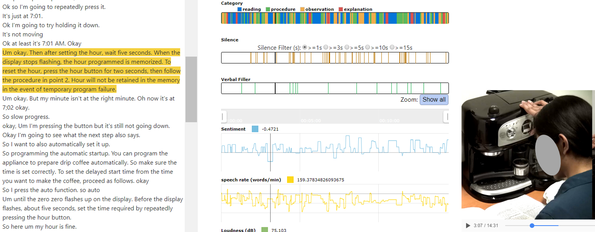
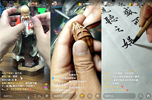
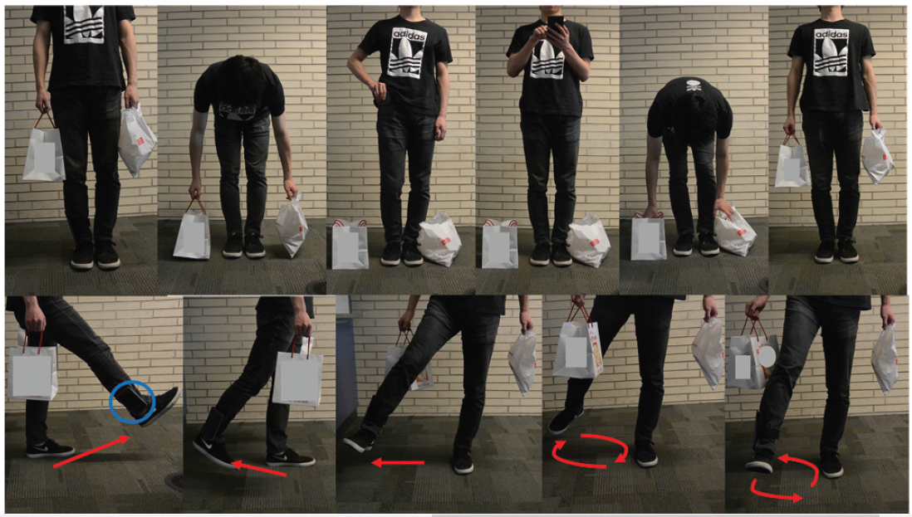
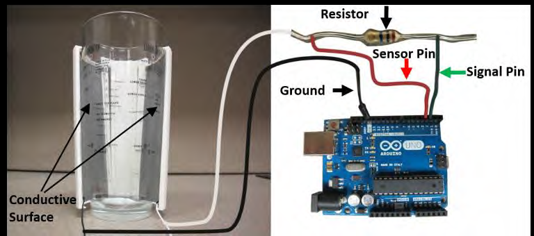

Dr. Fan founded and leads the Accessible & Pervasive User EXperience (APEX) Group to research at the intersection of Human-Computer Interaction (HCI) and Artificial Intelligence (AI). APEX group tackles Human-Centered Problems, especially the ones faced by Older Adults (i.e., elderly) and People with Disabilities, through computational approaches. Our group designs, builds, and evaluates intelligent and interactive computational prototypes by leveraging Human-AI Collaboration, VR/AR/XR/Metaverse, Interactive Visualization, and Ubiquitous Sensing Techniques. Dr. Fan and his team won Best Paper Award, Best Paper Honorable Mention Award, and Best Artifact Award from top-tier venues in HCI and Accessibility, such as CHI, UbiComp, and ASSETS.
Research
Note: *: Corresponding Author (annotated since 2022); #: equal contribution
UbiComp 2022
Synapse: Interactive Guidance by Demonstration with Trial-and-Error Support for Older Adults to Use Smartphone Apps
Xiaofu Jin, Xiaozhu Hu, Xiaoying Wei, Mingming Fan* UbiComp 2022 (To be presented) Proceedings of the ACM on Interactive, Mobile, Wearable and Ubiquitous Technologies (IMWUT), Volume 6, Issue 3, September 2022, Article No.: 121, https://doi.org/10.1145/3550321 PDF |Video (Youtube)
CSCW 2022
Human-AI Collaboration for UX Evaluation: Effects of Explanation and Synchronization
Mingming Fan*, Xianyou Yang, Tsz Tung Yu, Vera Q. Liao, Jian Zhao CSCW 2022 (To be presented) Proceedings of the ACM on Human-Computer Interaction (PACM HCI), 6, CSCW1,
Article 96 (April 2022), 32 pages. https://doi.org/10.1145/3512943 PDF
CSCW 2022
Typist Experiment: an Investigation of Human-to-Human Dictation via Role-play to Inform Voice-based Text Authoring
Can Liu, Siying Hu, Li Feng, Mingming Fan CSCW 2022 (To be presented) Proceedings of the ACM on Human-Computer Interaction (PACM HCI), 6, CSCW2,
Article 199 (Nov. 2022)
ASSETS 2022
"I Used To Carry A Wallet, Now I Just Need To Carry My Phone": Understanding Current Banking Practices and Challenges Among Older Adults in China
Xiaofu Jin, Mingming Fan* ASSETS' 2022 (To be presented) In ACM SIGACCESS Conference on Computers and Accessibility (ASSETS' 2022) PDF
IJHCI
PoeticAR: Reviving Traditional Poetry of the Heritage Site of Jichang Garden via Augmented Reality
Jin Tian, Yifan Cao, Lingyi Feng, Dongting Fu, Linping Yuan, Huaming Qu, Yang Wang, Mingming Fan* International Journal of Human-Computer Interaction (Accepted)
Chinese CHI 2022
Understanding Older Adults' Perceptions and Challenges in Using AI-enabled Everyday Technologies
Esha Shandilya, Mingming Fan* Chinese CHI 2022 (To be presented) The Tenth International Symposium of Chinese CHI, ACM. PDF
Chinese CHI 2022
Communication in Immersive Social Virtual Reality: A Systematic Review of 10 Years' Studies
Xiaoying Wei#, Xiaofu Jin#, Mingming Fan* Chinese CHI 2022 (To be presented) The Tenth International Symposium of Chinese CHI, ACM. PDF
Chinese CHI 2022
Reducing Stress and Anxiety in the Metaverse: A Systematic Review of Meditation, Mindfulness and Virtual Reality
Xian Wang#, Xiaoyu Wang#, Mingming Fan*, Lik-Hang Lee, Bertram E. Shi, Pan Hui* Chinese CHI 2022 (To be presented) The Tenth International Symposium of Chinese CHI, ACM. PDF
DIS 2022
"It Feels Like Being Locked In A Cage": Understanding Blind or Low Vision Streamers' Perceptions of Content Curation Algorithms
Zhiyi Rong, Mo Zhou, Zhicong Lu*, Mingming Fan* In ACM SIGCHI Conference on Designing Interactive Systems (DIS' 22) (acceptance rate: 21.5%) PDF
IJHCI
Understanding How Older Adults Comprehend COVID-19 Interactive Visualizations via Think-Aloud Protocol
Mingming Fan*, Yiwen Wang, Yuni Xie, Franklin Li, Chunyang Chen International Journal of Human-Computer Interaction PDF | Appendix
CHI 2022
"I Shake The Package To Check If It's Mine": A Study of Package Fetching Practices and Challenges of Blind and Low Vision People in China
Wentao Lei, Mingming Fan*, Juliann Thang In CHI Conference on Human Factors in Computing Systems (CHI'22) PDF
CHI 2022
"I Don't Want People to Look At Me Differently": Designing User-Defined Above-the-Neck Gestures for People with Upper Body Motor Impairments
Xuan Zhao, Mingming Fan*, Teng Han In CHI Conference on Human Factors in Computing Systems (CHI'22) PDF
CHI 2022
"Merging Results Is No Easy Task": An International Survey Study of Collaborative Data Analysis Practices Among UX Practitioners
Emily Kuang, Xiaofu Jin, Mingming Fan* In CHI Conference on Human Factors in Computing Systems (CHI'22) PDF
CHI 2022
From WOW to WHY: Guidelines for Creating the Opening of a Data Video with Cinematic Styles
Xian Xu, Leni Yang, David Yip, Mingming Fan*, Zheng Wei, Huamin Qu In CHI Conference on Human Factors in Computing Systems (CHI'22) PDF
CHI 2022
"I need to be professional until my new team uses emoji, GIFs, or memes first": New Collaborators’ Perspectives on Using Non-Textual Communication in Virtual Workspaces
Esha Shandilya, Mingming Fan, Garreth Tigwell In CHI Conference on Human Factors in Computing Systems (CHI'22) PDF
CACM
Credit: Getty Images
Eyelid Gestures for People with Motor Impairments
Mingming Fan*, Zhen Li, Franklin Mingzhe Li Communications of the ACM, January 2022, Vol. 65 No. 1, Pages 108-115, 10.1145/3498367 HTML | PDF | Video (Youtube)| Code | Report
Chinese CHI 2021
Think-Aloud Verbalizations for Identifying User Experience Problems: Effects of Language Proficiency with Chinese Non-Native English Speakers
Mingming Fan, Lingyun (Julie) Zhu Chinese CHI 2021 The Ninth International Symposium of Chinese CHI (Chinese CHI 2021), ACM, 11 pages. PDF
TVCG (VIS 2021)
CoUX: Collaborative Visual Analysis of Think-Aloud Usability Test Videos for Digital Interfaces
Ehsan Jahangirzadeh#, Emily Kuang#, Mingming Fan, Jian Zhao (#:equal contribution) IEEE VIS 2021 IEEE Transactions on Visualization and Computer Graphics PDF | Video (Youtube) | Code
UbiComp 2021
Douleur: Creating Pain Sensation with Chemical Stimulant to Enhance User Experience in Virtual Reality
Chutian Jiang#, Yanjun Chen#, Mingming Fan, Liuping Wang, Luyao Shen, Nianlong Li, Wei Sun, Yu Zhang, Feng Tian, Teng Han(#:equal contribution) UbiComp 2021 Proceedings of the ACM on Interactive, Mobile, Wearable and Ubiquitous Technologies (IMWUT), Volume 5, Issue 2, June 2021, Article No.: 66, pp 1–26. PDF
TSE
Accessibile or Not? An Empirical Investigation of Android App Accessibility
Sen Chen, Chunyang Chen, Lingling Fan, Mingming Fan, Xian Zhan, and Yang Liu IEEE Transactions on Software Engineering PDF | Website | Code
DIS 2021
"Too Old to Bank Digitally?": A Survey of Banking Practices and Challenges among Older Adults in China
Xiaofu Jin, Emily Kuang, Mingming Fan In ACM Conference on Designing Interactive Systems (DIS'21), Pages 802–814 PDF | Survey Questions
CHI 2021
Older Adults' Think-Aloud Verbalizations and Speech Features for Identifying User Experience Problems
Mingming Fan, Qiwen Zhao, Vinita Tibdewal In CHI Conference on Human Factors in Computing Systems (CHI'21) PDF | Video (Youtube)
CHI 2021
"I Choose Assistive Devices That Save My Face": A Study on Perceptions of Accessibility and Assistive Technology Use Conducted in China
Franklin Mingzhe Li, Di Laura Chen, Mingming Fan, Khai N. Truong In CHI Conference on Human Factors in Computing Systems (CHI'21) PDF
CHI 2021
vMirror: Enhancing the Interaction with Occluded or Distant Objects in VR with Virtual Mirrors
Nianlong Li, Zhengquan Zhang, Can Liu, Zengyao Yang, Yinan Fu, Feng Tian, Teng Han, Mingming Fan In CHI Conference on Human Factors in Computing Systems (CHI'21) PDF | Video (Youtube)
TVCG (VIS 2021)
ChartSeer: Interactive Steering Exploratory Visual Analysis with Machine Intelligence
Jian Zhao, Mingming Fan, Mi Feng IEEE Transactions on Visualization and Computer Graphics, 2020 PDF | Video (Youtube)
ASSETS 2020
Eyelid Gestures on Mobile Devices for People with Motor Impairments
Mingming Fan#, Zhen Li#, Franklin Mingzhe Li# (#:equal contribution) In 22nd International ACM SIGACCESS Conference on Computers and Accessibility, 2020, Article No.: 15, pp 1–8 PDF | Video (Youtube)| Talk | Code | Application (Apk file)
| Best Artifact Award
CHI 2020
Mouillé: Exploring Wetness Illusion on Fingertips to Enhance Immersive Experience in VR
Teng Han, Sirui Wang, Sijia Wang, Xiangmin Fan, Jie Liu, Feng Tian, and Mingming Fan In CHI Conference on Human Factors in Computing Systems, 2020 PDF | Video (Youtube) | Talk
TiiS
Automatic Detection of Usability Problem Encounters in Think-Aloud Sessions
Mingming Fan, Yue Li, Khai N. Truong ACM Transactions on Interactive Intelligent Systems (TiiS), Article No. 16, May 2020 PDF
JUS
Practices and Challenges of Using Think-aloud Protocols in Industry: An International Survey
Mingming Fan, Serina Shi, Khai N. Truong Journal of Usability Studies, Vol. 15, Issue 2, February, 2020, pp. 85-102 PDF |Survey
Ph.D. Dissertation
Leveraging Subtle Verbalization and Speech Patterns to Help Evaluators Identify Usability Problem Encounters in Concurrent Think-aloud Sessions
Mingming Fan Ph.D. Dissertation(July 2019) Department of Computer Science, University of Toronto, Toronto, Canada PDF
TVCG (VIS 2019)
VisTA: Integrating Machine Intelligence with Visualization to Support the Investigation of Think-Aloud Sessions
Mingming Fan, Ke Wu, Jian Zhao, Yue Li, Winter Wei, and Khai N. Truong IEEE Transactions on Visualization and Computer Graphics, Vol. 26, Issue 1, January, 2020 PDF | Video (Youtube)
TOCHI (CHI 2020)

Concurrent Think-Aloud Verbalizations and Usability Problems
Mingming Fan, Jinglan Lin, Christina Chung, Khai N. Truong ACM Transactions on Computer-Human Interaction. 26 (5), Article 8, 35 pages, 2019. PDF
IMWUT (UbiComp 2019)
FMT: A Wearable Camera-Based Object Tracking Memory Aid for Older Adults
Franlin Mingzhe Li, Di Laura Chen, Mingming Fan, and Khai N. Truong In Proceedings of ACM on Interactive, Mobile, Wearable and Ubiquitous Technologies PDF | New Scientist Report |ACM DL
CHI 2019

"I feel it is my responsibility to stream”: Streaming and Engaging with Intangible Cultural Heritage through Livestreaming
Zhicong Lu, Michelle Annett, Mingming Fan, Daniel Wigdor In 2019 CHI Conference on Human Factors in Computing Systems PDF |
Best Paper Award
CHI 2019
PinchList: Leveraging Pinch Gestures for Hierarchical List Navigation
on Smartphones
Teng Han, Jie Liu, Khalad Hasan, Mingming Fan, Junhyeok Kim, Jiannan Li, Xiangmin Fan,
Feng Tian, Edward Lank, and Pourang Irani In 2019 CHI Conference on Human Factors in Computing Systems PDF | Video (Youtube)
Internet of Things
Projected Visible Light for 3D Finger Tracking and Device Augmentation on Everyday Objects
Shang Ma, Qiong Liu, Mingming Fan, Phillip Sheu Internet of Things. 2019. Volume 6. Elsevier PDF
TVCG (VIS 2018)
InkPlanner: Supporting Prewriting via Intelligent Visual Diagramming
Zhicong Lu, Mingming Fan, Yun Wang, Jian Zhao, Michelle Annett, Daniel Wigdor IEEE Transactions on Visualization and Computer Graphics, Vol. 25, Issue 1, 2019 PDF | Video (Youtube)
TACCESS (ASSETS 2018)
Guidelines for Creating Senior-Friendly Product Instructions
Mingming Fan, Khai N. Truong ACM Transactions on Accessible Computing 11, 2, Article 9 (June 2018), 35 pages. PDF
ASSETS 2017
BrailleSketch: A Gesture-based Text Entry Method for
People with Visual Impairments
Franklin Li, Mingming Fan, Khai N. Truong In 19th International ACM SIGACCESS Conference on Computers and Accessibility (ASSETS
'17). PDF
ISWC 2017
An Empirical Study of Touch-based Authentication Methods on
Smartwatches
Yue Zhao, Zhongtian Qiu, Yiqing Yang, Weiwei Li, Mingming Fan In 2017 ACM International Symposium on Wearable Computers (ISWC '17). PDF
ISWC 2017

An Empirical Study of Foot Gestures for Hands-Occupied Mobile
Interaction
Mingming Fan, Yizheng Ding, Fang Shen, Yuhui You, Zhi Yu In 2017 ACM International Symposium on Wearable Computers (ISWC '17). PDF

Exploring the Use of Capacitive Sensing to
Externally Measure Liquid Level in Fluid Containers
Mingming Fan, Khai N. Truong, Abhishek Ranjan Knowledge Media Design Institute Technical Report, University of Toronto, 2016 PDF | Video (Youtube)
UbiComp 2015
SoQr: Sonically Quantifying the Content Level inside
Containers
Mingming Fan, Khai N. Truong In 2015 ACM International Joint Conference on Pervasive and Ubiquitous Computing (UbiComp) PDF | Video (Youtube) |
Best Paper Honorable Mention Award
ISWC 2014
Public Restroom Detection on Mobile Phone via Active Probing
Mingming Fan, Alexander T. Adams, Khai N. Truong In 2014 ACM International Symposium on Wearable Computers (ISWC'14). PDF | Video (Youtube)
HotMobile 2014
HiFi: Hide and Find Digital Content Associated with Physical
Objects via Coded Light
Mingming Fan, Qiong Liu, Hao Tang, Patrick Chiu In 15th Workshop on Mobile Computing Systems and Applications (HotMobile '14). PDF
UbiComp 2012
Augmenting Gesture Recognition with Erlang-Cox Models to
Identify Neurological Disorders in Premature Babies
Mingming Fan, Dana Gravem, Dan Cooper, Donald J Patterson In 2012 ACM Conference on Ubiquitous Computing (UbiComp'12), pp411-420. PDF | Video (Youtube)
Paper Awards
2020
Best Artifact Award, ACM ASSETS 2020
2019
Best Paper Award, CHI 2019
2015
Best Paper Honorable Mention Award, ACM UbiComp 2015
Services
Technical Program Committee
CHI 2023
CHI 2022
ACM ASSETS 2021
CHI 2021
ACM ASSETS 2020
Organizing Committee
ASSETS 2022
Student Research Competition Chair
Reviewer (Selected)
CHI
received "special recognition" for outstanding reviews
ACM Transactions on Computer-Human Interaction (TOCHI)
ACM ASSETS
ACM Transactions on Accessible Computing (TACCESS)
ACM UbiComp / IMWUT
received "special recognition" for outstanding reviews
ACM UIST
received "special recognition" for outstanding reviews
IEEE VIS
ACM CSCW
ACM SIGGRAPH
Teaching
Fall 2022
CMAA 5018: Assistive Technology Design
HKUST (Guangzhou and Clear Water Bay)
Spring 2022
CMAA 5017: AR/VR/MR/XR: Concepts, Theory and Techniques
HKUST (Guangzhou and Clear Water Bay)
Spring 2021
HCIN-722: HCI with Mobile, Wearable, and Ubiquitous Devices
RIT
Spring 2021
ISTE-799: Independent Study
RIT
Fall 2020
HCIN-720: Prototyping Wearable and Internet of Things Devices
RIT
Spring 2020
HCIN-722: HCI with Mobile, Wearable, and Ubiquitous Devices
RIT
Spring 2020
ISTE-799: Independent Study
RIT
Fall 2019
HCIN-720: Prototyping Wearable and Internet of Things Devices
Prospective Ph.D. Students: I always look for outstanding students to pursue PhD.
Successful applicants often have: 1) demonstrated research experience in tackling human-centered problems with computational and/or user-centered design approaches, 2) strong programming and/or electronics/hardware prototyping skills, and 3) excellent academic performance with open-mindness to learning in a multi-disciplinary team. If this sounds like you, please submit a complete PhD application in our official system and mention me as a potential advisor.
You are welcome to drop me an email with CV and transcript. While I may not reply your emails in time due to a high volume of inquiries, I'll carefully consider your application.
Prospective MPhil Students: Our Red bird MPhil program is fully funded and accepts applicants for the 2023/24 academic year too. Follow the instructions via this link and apply accordingly.
Recent News
Feb 2022: Five full papers are accepted to ACM CHI 2022, the flagship conference of the field of Human-Computer Interaction (HCI). Congratulations to the corresponding APEX group members and our collaborators!
Dec 2021: Our work on enabling people with motor impairments to interact with smartphones via eyelid gestures was published in Communications of ACM
Dec 2021: One full paper accepted by CSCW 2022 (published in PACM HCI journal), the premier venue for Computer-supported cooperative work (CSCW) and social computing research.
Congrats to my student Xianyou and the three collaborators: Dennis, Vera and Jian!
Oct 2021: One full paper accepted by Chinese CHI 2021.
Congrats to my student Lingyun (Julie) and collaborators Dennis, Vera and Jian!
July 2021: One full paper accepted by IEEE VIS 2021 (TVCG) Congrats to my student Emily and collaborators Ehsan and Jian!
July 2021: One full paper accepted by IMWUT (UbiComp 2021)
Congrats to all coauthors!
July 2021: Excited to join HKUST as an Assistant Professor!
Look forward to working with colleagues and students at HKUST.
July 2021: Our NSF grant proposal about managing privacy and environment for used and
end-of-life electronic devices has been funded.
Thanks NSF! Congrats to my colleagues Eric, Stacey, Tom, and Willie!
July 2021: Relocated to China after working two wonderful years at RIT.
Thanks to all my wonderful and supportive colleagues and students at RIT! You all rock!
May 2021: Our NSF proposal about developing online labs for building accessible software has been funded! Thanks NSF! Congrats to my colleagues Dan Krutz and Sam Malachowsky!
April 2021: One full paper @ DIS 2021 Congrats to my students Xiaofu and Emily!
Dec 2020: Three full papers @ CHI 2021 Congrats to my students Qiwen and Vinita and also my collaborators!


 Best Paper Award
Best Paper Award


 Best Paper Honorable Mention Award
Best Paper Honorable Mention Award